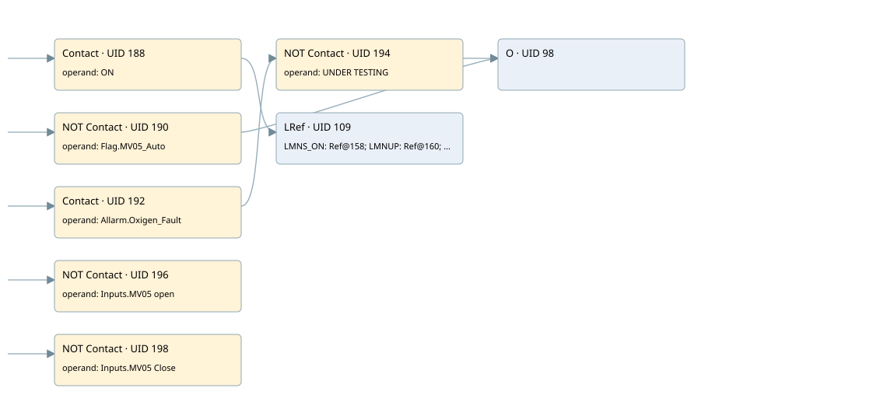

controll ro01 moduling mv05 - pid
cyc_int5 ogni 100ms · 검색 색인 순서 2 · 원본 내부 NID 추정 2
백업 PLF 원본의 3096758 바이트 위치에서 복원한 XML. 검색 문서 5의 객체 키 16102200d36a000000000000와 연결했다. 이름 해석 18/27개. 남은 RefId는 상수 또는 미해석 참조다.
연결 구조 다시 그리기
원본 Part/PCon/Wire를 이용한 연결도다. TIA 화면의 래더 배치 또는 실행 결과를 재현한 그림은 아니다. 핀 연결은 아래 표와 원본 XML을 기준으로 읽는다. 노드 위에 마우스를 두면 피연산자 이름을 볼 수 있다.

접점·코일·블록과 피연산자
| Part UID | Gate | Negated 핀 | 연결 피연산자 |
|---|---|---|---|
| 188 | Contact | operand = ON | |
| 190 | Contact | operand | operand = Flag.MV05_Auto |
| 192 | Contact | operand = Allarm.Oxigen_Fault | |
| 194 | Contact | operand | operand = UNDER TESTING |
| 98 | O | ||
| 196 | Contact | operand | operand = Inputs.MV05 open |
| 198 | Contact | operand | operand = Inputs.MV05 Close |
| 109 | LRef | 호출 참조: RefId 113; LMNS_ON = RefId (RefId 없음) / ORef UID 158; LMNUP = RefId (RefId 없음) / ORef UID 160; LMNDN = RefId (RefId 없음) / ORef UID 162; PVPER_ON = RefId (RefId 없음) / ORef UID 164; CYCLE = T#100MS; SP_INT = Real_SPO2; PV_IN = Real_O2; PV_PER = RefId (RefId 없음) / ORef UID 169; GAIN = 2.0; TI = T#1M; DEADB_W = 1.0; PV_FAC = RefId (RefId 없음) / ORef UID 174; PV_OFF = RefId (RefId 없음) / ORef UID 176; PULSE_TM = T#200MS; BREAK_TM = T#3S; MTR_TM = T#5S; DISV = 1.0; QLMNUP = PID UP MV05; QLMNDN = PID DOWN MV05; PV = RefId (RefId 없음) / ORef UID 184; ER = RefId (RefId 없음) / ORef UID 186 |
접점 경로를 펼친 조건식
Contact·O/A·비교기의 원본 연결을 읽기 쉽게 펼친 보조 해석이다. POWER는 전원 레일 시작을 뜻한다. 호출 블록·에지·타이머의 내부 동작과 다중 쓰기 순서는 이 표로 실행 검증하지 않았다. 미해석 핀과 RefId는 원문 연결표에서 확인한다.
| UID | 동작 | 대상 | 원본 접점 경로 | 내용 |
|---|
원본 배선 연결
| Wire UID | 동일 Wire 연결 끝점 |
|---|---|
| 200 | Powerrail {} ↔ Part 188.in ↔ Part 190.in ↔ Part 192.in ↔ Part 196.in ↔ Part 198.in |
| 150 | ORef 131 (ON) ↔ Part 188.operand |
| 189 | Part 188.out ↔ Part 109.en |
| 151 | ORef 132 (Flag.MV05_Auto) ↔ Part 190.operand |
| 191 | Part 190.out ↔ Part 98.in1 |
| 152 | ORef 133 (Allarm.Oxigen_Fault) ↔ Part 192.operand |
| 193 | Part 192.out ↔ Part 194.in |
| 153 | ORef 134 (UNDER TESTING) ↔ Part 194.operand |
| 195 | Part 194.out ↔ Part 98.in2 |
| 155 | Part 98.out ↔ Part 109.COM_RST |
| 156 | ORef 135 (Inputs.MV05 open) ↔ Part 196.operand |
| 197 | Part 196.out ↔ Part 109.LMNR_HS |
| 157 | ORef 136 (Inputs.MV05 Close) ↔ Part 198.operand |
| 199 | Part 198.out ↔ Part 109.LMNR_LS |
| 159 | ORef 158 (RefId (RefId 없음)) ↔ Part 109.LMNS_ON |
| 161 | ORef 160 (RefId (RefId 없음)) ↔ Part 109.LMNUP |
| 163 | ORef 162 (RefId (RefId 없음)) ↔ Part 109.LMNDN |
| 165 | ORef 164 (RefId (RefId 없음)) ↔ Part 109.PVPER_ON |
| 166 | ORef 137 (T#100MS) ↔ Part 109.CYCLE |
| 167 | ORef 138 (Real_SPO2) ↔ Part 109.SP_INT |
| 168 | ORef 139 (Real_O2) ↔ Part 109.PV_IN |
| 170 | ORef 169 (RefId (RefId 없음)) ↔ Part 109.PV_PER |
| 171 | ORef 140 (2.0) ↔ Part 109.GAIN |
| 172 | ORef 141 (T#1M) ↔ Part 109.TI |
| 173 | ORef 142 (1.0) ↔ Part 109.DEADB_W |
| 175 | ORef 174 (RefId (RefId 없음)) ↔ Part 109.PV_FAC |
| 177 | ORef 176 (RefId (RefId 없음)) ↔ Part 109.PV_OFF |
| 178 | ORef 143 (T#200MS) ↔ Part 109.PULSE_TM |
| 179 | ORef 144 (T#3S) ↔ Part 109.BREAK_TM |
| 180 | ORef 145 (T#5S) ↔ Part 109.MTR_TM |
| 181 | ORef 146 (1.0) ↔ Part 109.DISV |
| 182 | Part 109.QLMNUP ↔ ORef 147 (PID UP MV05) |
| 183 | Part 109.QLMNDN ↔ ORef 148 (PID DOWN MV05) |
| 185 | Part 109.PV ↔ ORef 184 (RefId (RefId 없음)) |
| 187 | Part 109.ER ↔ ORef 186 (RefId (RefId 없음)) |
식별자 해석 근거 27개
| ORef UID | RefId | 이름 | IdentXmlPart 파일 | 해석 방법 |
|---|---|---|---|---|
| 131 | 17 | ON | 0670-IdentXmlPart.xml | UID/RID + search-text + NID agreement |
| 132 | 7 | Flag.MV05_Auto | 0668-IdentXmlPart.xml | UID/RID + search-text + NID agreement |
| 133 | 9 | Allarm.Oxigen_Fault | 0668-IdentXmlPart.xml | UID/RID + search-text + NID agreement |
| 134 | 10 | UNDER TESTING | 0670-IdentXmlPart.xml | UID/RID + search-text + NID agreement |
| 135 | 119 | Inputs.MV05 open | 0668-IdentXmlPart.xml | UID/RID + search-text + NID agreement |
| 136 | 120 | Inputs.MV05 Close | 0668-IdentXmlPart.xml | UID/RID + search-text + NID agreement |
| 158 | (RefId 없음) | 미해석 RefId | 식별 선언 원본 참조 | 미해석 |
| 160 | (RefId 없음) | 미해석 RefId | 식별 선언 원본 참조 | 미해석 |
| 162 | (RefId 없음) | 미해석 RefId | 식별 선언 원본 참조 | 미해석 |
| 164 | (RefId 없음) | 미해석 RefId | 식별 선언 원본 참조 | 미해석 |
| 137 | 21 | T#100MS | 0667-IdentXmlPart.xml | literal candidate: UID/RID/NID + nearby named declarations + search-text agreement |
| 138 | 3 | Real_SPO2 | 0669-IdentXmlPart.xml | UID/RID + search-text + NID agreement |
| 139 | 5 | Real_O2 | 0669-IdentXmlPart.xml | UID/RID + search-text + NID agreement |
| 169 | (RefId 없음) | 미해석 RefId | 식별 선언 원본 참조 | 미해석 |
| 140 | 22 | 2.0 | 0667-IdentXmlPart.xml | literal candidate: UID/RID/NID + nearby named declarations + search-text agreement |
| 141 | 23 | T#1M | 0667-IdentXmlPart.xml | literal candidate: UID/RID/NID + nearby named declarations + search-text agreement |
| 142 | 24 | 1.0 | 0667-IdentXmlPart.xml | literal candidate: UID/RID/NID + nearby named declarations + search-text agreement |
| 174 | (RefId 없음) | 미해석 RefId | 식별 선언 원본 참조 | 미해석 |
| 176 | (RefId 없음) | 미해석 RefId | 식별 선언 원본 참조 | 미해석 |
| 143 | 25 | T#200MS | 0667-IdentXmlPart.xml | literal candidate: UID/RID/NID + nearby named declarations + search-text agreement |
| 144 | 26 | T#3S | 0667-IdentXmlPart.xml | literal candidate: UID/RID/NID + nearby named declarations + search-text agreement |
| 145 | 27 | T#5S | 0667-IdentXmlPart.xml | literal candidate: UID/RID/NID + nearby named declarations + search-text agreement |
| 146 | 24 | 1.0 | 0667-IdentXmlPart.xml | literal candidate: UID/RID/NID + nearby named declarations + search-text agreement |
| 147 | 28 | PID UP MV05 | 0670-IdentXmlPart.xml | UID/RID + search-text + NID agreement |
| 148 | 29 | PID DOWN MV05 | 0670-IdentXmlPart.xml | UID/RID + search-text + NID agreement |
| 184 | (RefId 없음) | 미해석 RefId | 식별 선언 원본 참조 | 미해석 |
| 186 | (RefId 없음) | 미해석 RefId | 식별 선언 원본 참조 | 미해석 |
검색 코드 보조 자료
참조 명칭을 찾기 위한 자료이며 실행 순서나 AND/OR 관계는 위 연결표로 확인한다.
"on" cont_s "pid_mv05" t#100ms #real_spo2 #real_o2 2.0 t#1m 1.0 t#200ms t#3s t#5s 1.0 "flag".mv05_auto "allarm".oxigen_fault "under testing" "inputs"."mv05 open" "inputs"."mv05 close" "pid up mv05" "pid down mv05"